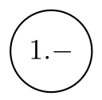

Summary
| Begriff | Beschreib |
|---|---|
| Alphabet | Endliche, nichtleere Menge von Symbolen (\(\Sigma=\{a, b, c\}\)) |
| Wort | Endliche Folge von Symbolen |
| \(\varepsilon\) | Das Leere Wort (\(\vert \varepsilon\vert=0\)) |
| Sprache | Eine Menge von Wörtern (\(L=\{10, 1100, ...\}\), in Prosa oder \(L=\{1^n0^n\mid n\in \N\}\)) |
| \(\emptyset\) | Leere Sprache (\(\emptyset \neq \{\varepsilon\}\)) |
| \(\vert abca\vert_a=2\) | Häufigkeit von a |
| \((abc)^R\) | Spiegelwort von \(abc\) |
| \(\Sigma^2\) | Alle Wörter des Alphabets \(\Sigma\) mit der Länge 2 |
| Kleenesche Hülle \(\Sigma^*\) | Alle Wörter des Alphabets \(\Sigma\) (\(\Sigma^+=\Sigma^*\setminus\{\varepsilon\}\)) |
| Konkatination \(x\circ y=xy\) | Zwei Wörter werden zusammen verketet |
| Wortpotenzen | \((ab)^3=ababab\) |
| Sprachen-Konkatenation | \(AB=\{uv\mid u \in A \text{ und } v \in B\}\) |
| Kleenesche Hülle einer Sprache | \(A^*=\varepsilon \cup A \cup AA \cup AAA \cup ...\) |
| Komplement einer Sprache | \(\overline L=\Sigma^*-L=\Sigma^*\setminus L\) |
Regex
- \(\epsilon\) - eine leere Regular-Expression. Diese matcht nichts. Beschreibt \(\{\varepsilon\}\)
- \([x_1, x_2, ...,x_k]=x_1|x_2|...|x_k\)
- \(\oslash\) - eine leere Menge von Regular-Expressions
- \(\O\) - eine leere Sprache
*zuerst verarbeiten, danach Konkatenation, danach|verarbeiten (Stern vor Konkatenation vor Strich)
Wenn zwei Sprachen regulär sind, ist das Resultat von einem Operator mit diesen Sprachen regulär
Endliche Automaten
Deterministische Endlichen Automat: \(M=(Q, \Sigma, \delta, q_0, F)\)
- \(Q\) : Alle Zustände des Automaten \(Q=\{q_0, q_1, ...,q_n\}\)
- \(\Sigma\): Eingabealpabet
- \(\delta: Q\times \Sigma \rightarrow Q\): Übergangsfunktionen, welche von einem Zustand und einem Eingabe Symbol zum nächsten Zustand führt
- \(q_0\): Startzustand
- \(F\subseteq Q\): Menge der akzeptierten Zuständen. Mindestens ein Zustand muss akzeptiert sein
Die Startkonfiguration ist: \(\{q_0\}\times \Sigma^*\), die Endkonfiguration: \((q, w)\in Q\times\{\epsilon\}\) $(q0, a_1a_2a_3)\vdash_A(q_1, a_2a_3)\vdash_A(q_2, a_3)\vdash_A(q4, \epsilon)=(q0, a_1a_2a_3)\vdash_A^*(q4, \epsilon) $
| Was | Beschreibung | ||
|---|---|---|---|
 |
Der Startzustand |  |
Akzeptierter Endzustand |
|  | Normaler Zustand |  |
Übergangsfunktionen |
Nicht Deterministische Automaten (NEA)
Übergangsfunktion einer NEA: \(\delta: Q\times \Sigma\rightarrow \mathcal P(Q)\).
Übergangsfunktion einer \(\varepsilon\)-NEA (Übergangsfunktion: \(\delta: Q\times \Sigma \cup \{\epsilon\}\rightarrow \mathcal P(Q)\))
Teilmengenkonstruktion (\(NEA \to DEA\))
- Die Zustände sind die Potenzmenge von \(Q_N\) (Potenzmenge: \(\mathcal P(\{0, 1\})=\{\emptyset, \{0\}, \{1\}, \{0, 1\}\}\) und \(|\mathcal P(A)|=2^{|A|}\))
- Akzeptierte Zustände sind alle Teilmengen, welche ein Element aus \(F_N\) besitzen
- Aus den Zuständen und eingaben soll nun eine Tabelle gezeichnet werden. Bei dieser können alle Zustände gestrichen werden, welche nicht erreichbar sind. Dies muss solange wiederholt werden, bis nichts gestrichen werden kann. (\(q0\) ist Startzustand)
- Die noch nicht gestrichenen Resultaten können nun Namen verteilt werden (z.B A-Z)

DEA \(\to\) RegEX
- Für jeden Zustand eine separate Sprache definieren. Diese darf sich selbst referenzieren oder auch andere Sprachen
- Kürzen und einsetzen. Meistens ist es am einfachsten von den Endzuständen zu kürzen zu beginnen
Arden'sches Lemma: \(L=UL|V\Rightarrow L=U^*V\), dabei ist \(L\) eine Spraceh und \(U\) einen andren Ausdruck
Zustandsklassen: \([p]=\{w \in \Sigma^*\vert M \text{ endet nach Lesen des Input-Worts } w \text{ im Zustand } p\}\), dabei ist \(M\) einen Automaten, \(w\) ein eingabe Wort und \(p\) ein Zustand (nicht unbedingt der Endzustand)
Untere Schranke für endliche Automaten
Es müssen nun die folgende Schritte gefolgt werden:
- Es wird eine Annahme getroffen, wie viele Zustände eine Maschine benötigt
- Es müssen für jeden Zustand ein Wort gefunden werden, welches in diesem Zustand endet
- Es wird nun für jede Kombination von Wörter von Schritt 2. ein Prefix oder Postfix \(z\) gefunden werden, welcher kombiniert mit dem einen Wort akzeptiert wird und mit dem anderen Wort nicht akzeptiert wird.
Kontextfreie Gramatik
Die Kontextfreie Grammatik \(G\) ist durch das Tupel \((N, \Sigma, P, A)\) definiert, wobei
- \(N\) das Alphabet der Nichtterminale
- \(P\) eine endliche Menge von Produktionen
- \(A\) das Startsymbol ist und gilt \(A\in N\)
$$ G_1=({A}, {0, 1}, P, A) \ P={A\rightarrow0A1,A\rightarrow\varepsilon} $$ Eine Kontextfreie Grammatik wird mehrdeutig genannt, wenn es für ein Wort mehrere Ableitungsbäume gibt. Eine Sprache ist kontextfrei, wenn ein Kellerautomaten dazu gebaut werden kann.
- Mehrere Ableitungsschritte: \(A\Rightarrow AA \Rightarrow (A)A \Rightarrow (A)(A)\Rightarrow()()\) oder \(A\overset * \Rightarrow ()()\)
- Ein Wort wird ableitbar gennant, wenn es eine Ableitung für dieses Wort gibt.
- Link- & rechtssseitig Ableiten: Die am meisten linke/rechte Variable wird immer zuerst abgeleitet
- eindeutige Gramatik: Eine Gramatik, welche nur auf eine Art abgeleitet werden kann
DEA zu kontextfreien Sprache
Es gibt eine DEA \(M=(Q, \Sigma, \delta, q_0, F)\). Aus dieser kann eine kontextfreie Sprache erstellt werden:
- Für jeden Zustand \(q_i\) gibt es ein Nichtterminal \(Q_i\)
- Für jede Transition \(\delta(q_i, a)=q_j\) gibt es eine Produktion \(Q_i\rightarrow aQ_j\)
- Für jeden akzeptierten Zustand gibt es eine Produktion \(Q_i\rightarrow \varepsilon\)
- Das Nichtterminal \(Q_0\) wird das Startsymbol
Keller Automaten (KA)
Ein deterministischer Keller Automaten (KA) wird als 7-Tupel dargestellt: \((Q, \Sigma, \Gamma, \delta, q_0, \$, F)\))
- \(\Gamma\) = Alphabet des Stacks; \(\delta: Q\times (\Sigma \cup \varepsilon) \times \Gamma\rightarrow Q\times\Gamma^*\); \(\$\in \Gamma\) = Leere Symbol
Zu dem gilt für die Übergangsfunktion \(\delta\), wenn \(\delta(q, b, x)\) definiert ist, darf \(\delta(q, \varepsilon, x)\) nicht definiert sein. Zu begin der Ausführung ist im Strack \(\$\), was ein leerer Stack darstellt.
Nichtdeterministischen Kellerautomaten (NKA)
Übergangsfuntkion Typ \(\delta: Q\times (\Sigma \cup \varepsilon) \times \Gamma\rightarrow \mathcal P (Q\times\Gamma^*)\)
Nicht alle NKA und kontextfreie Sprachen können in eine KA umgewandlet werden.
Berechnungen und Berechnungsschritte
 \(\delta(q, b, c)=(p, w)\) Vom Zustand \(q\) zu \(p\) mit dem Input-Symbol \(b\) und dem Kellersymbol \(c\). \(w\) wird geschrieben
\(\delta(q, b, c)=(p, w)\) Vom Zustand \(q\) zu \(p\) mit dem Input-Symbol \(b\) und dem Kellersymbol \(c\). \(w\) wird geschrieben
Beispiel Berechung: \((q_0, 0011, \$) \vdash (q_0, 011, 0\$)\vdash (q_0, 11, 00\$)\vdash(q_1, 1, 0\$)\vdash(q_1, \varepsilon, \$)\vdash(q2, \varepsilon, \$)=(q_0, 0011, \$)\vdash^* (q_2, \varepsilon, \$)\)
Turing Machinen
Eine (determinischtische) Turing-Maschine (DTM) ist ein 7-Tupel: \(M=(Q,\Sigma, \Gamma, \delta, \textvisiblespace, F)\)
- \(\delta: Q\times \Gamma \rightarrow Q\times\Gamma\times D, D=\{L, R\}\); \(\Gamma\) = Das Bandalphabet, dabei muss \(\Sigma \subset \Gamma\); \(\textvisiblespace\) = Das Leerzeichen, dabei muss \(\textvisiblespace \in \Gamma\) und \(\textvisiblespace \not \in \Sigma\)
\(X_1,...X_{i-1}qX_iX_{i+1},...,X_n\vdash X_1,...X_{i-1}pX_iX_{i+1},...,X_n=K_1\vdash^*K_n\)
Eine Sprache, welche von einer TM akzeptiert wird, nennt sich rekursiv aufzählbar
 \(\delta(q_1, X)=(q_2, Y, D)\), wobei \(D\in\{L, R\}\)
\(\delta(q_1, X)=(q_2, Y, D)\), wobei \(D\in\{L, R\}\)
Modifikationen
- Mit mehreren Spuren, welche auf einem Band sind (ein Lese/Schreibkopf)
- Mit mehreren Bändern (mehrere Lese/Schreibköpfe) (Übergangsfunktion: \(\delta:Q\times\Gamma^k\rightarrow Q\times \Gamma^k \times \{R, S, L\}^k\))
- Nicht deterministische Turning Machine (Übergangsfunktion: \(\delta: Q\times \Gamma \rightarrow \mathcal P(Q \times \Gamma \times \{R, L\})\)
- Mit semi-beschränktem Band Das Band ist nur unendlich in eine Richtung. Eine Semi-beschränkte TM ist gleich mächtig, wie eine TM. (Beweissidee: Eine semi-beschränkte TM mit zwei bänder, eines für die positive und eines für die negative Seite)
- \(k\)-Stack Machine Eine Deterministischer Kellear Automat mit mehreren Stacks (Übergangsfunktion: \(\delta: Q \times \Gamma_1\times...\times\Gamma_n\rightarrow Q\times\Gamma_1^*\times...\times \Gamma^*_k\)) Eine 2-Stack Machine kann ein Band simulieren und ist demnach gleich mächtig, wie eine TM
- Zähler-Machine (Hat Zähler einer natürlichen Zahl (\(n \ge 0\)) anstatt Stacks) Ein 2-Stack kann mit mit 3-Zähler ersetzt werden und daher ist ein Zähler-Machine gleich wertig, wie eine TM. Dafür wird jedem Symbol des Stacks eine Zahl zugeordnet (1, 2, 3, 4, ...). Der aktuelle Wert wird mit der Anzahl Symbolen multipliziert und mit dem nächsten Symbol addiert (\(c_{new}=c_{old}\cdot length + s\)). Beim dekodieren wird der Wert durch die Anzahl Symbole geteilt und der Rest ist das aktuelle Symbol. Diese 3-Zähler Machine kann mit einer 2-Zähler Machine simuliert werden, in dem die 3-Zähler mit der Encodierung \(2^i\cdot 3^j\cdot 4^k\) enkodiert werden und mit einer Primfaktorzerlegung dekodiert werden. Ein Zähler wird noch zum Rechnen benötigt.
Universelle Turning Maschine (UTM)
Eine Turing Maschine, welche andere Turning Maschinen simulieren kann. Alle Zustände werden Unär-Kodiert (0 = 1, 00 = 2, 000 = 3, ...) mit dem Trennzeichen 1. Dabei wird folgendes gespeichert: Die Übergangsfunktion \(\delta(q_i, X_j)=(q_k, X_l, D_m)\to 0^i10^j10^l10^m\). Einzelne Übergangsfunktionen werden mit 11 getrennt. Die Maschine wird mit 111 vom Input getrennt.
Berechnungsmodelle
Intuitive berechenbare Funktion: eine algorithmisch (durch eine mechanisches Verfahren) berechenbare Funktion
Gandys These M: Alles, was jemals mit einer (endlichen) Maschine/physikalischen Apparatur berechnet werden kann, ist von einer Turing-Maschine berechenbar
Turing-Vollständigkeit: Für jede Zahl \(k \in \N\) und jede Funktion \(f: \N^k \to \N\) gibt es eine Turing-Machine und While-Programm
- Zuweisungen:
x = y + coderx = y - c(wobei c eine Konstante ist!) x0ist der Output;x1,x2, ... sind die Inputs/Variabeln- Alle Variabeln können natürliche Zahlen (\(n \ge 0\)) enthalten (\(2-5=0\))
- Loop-Programme:
LOOP x DO ... ENDDer Loop wirdx-mall durchgeführt. Ändern vonxhat kein Einfluss - While-Programme (auch
LOOPist erlaubt) While xi > 0 Do ... EndDie einzige erlaubte Bedingung istxi > 0- GOTO-Programme: Marker: (
M1:,M2:, ...),Goto Mk,If xi = c Then Goto Mr,Halt(Haltet das Programm an) - Primitiv rekursive Funktion (nach dem Muster \(f: \N^2 \to \N\))
- Konstante Funktion: \(c^n_k: \N^n \to \N \mapsto c^n_k(x_1, ..., x_n)=k\)
- Nachfolge Funktion: \(\eta: \N \to \N \mapsto \eta(x)=x+1\)
- Projektion (\(1 \le k \le n\)): \(\pi^n_k: \N^n \to \N \mapsto \pi^n_k(x_1, ...,x_k,...,x_n)=x_k\)
- Wenn \(f\) und \(g_i\) primitive rekursive Funktionen sind, dann ist \(h(\vec x)=f(g_1(\vec x), ..., g_k(\vec x))\) auch eine primitive rekursive Funktion
- Primitive rekursive Funktionen = LOOP-Programme
Ackermann (ist Turing-berechenbar, nicht Loop berechen, bzw. nicht primitive rekursive, ist total): $$ \begin{align} a(0, m)&= m + 1\ a(n + 1, 0) &= a(n, 1)\ a(n + 1, m + 1) &= a(n, a(n + 1, m)) \end{align} $$
Entscheidbarkeit
Entscheidbar: Die TM haltet immer
Semi-Entscheidbar: Die TM haltet nur bei akzeptierten Zuständen
Reduktion Es gibt eine Funktion \(F: \Sigma^* \to \Gamma^*\) für die Sprache \(A \subset \Sigma^*\) und \(B \subset \Gamma^*\). Dies wird als \(A \preceq B\) geschrieben
- Jede entscheidbare Sprache ist auch semi-entscheidbar
- Wenn eine Sprache \(A\) und ihr Komplement \(\overline A\) semi-entscheidbar ist, sind \(A\), wie auch \(\overline A\) entscheidbar
- Wenn \(A\) entscheidbar ist, ist auch \(\overline A\) entscheidbar
- Wenn \(A\) und \(B\) (semi-)entscheidbar sind, ist auch \(A \cup B\) und \(A \cap B\) (semi-)entscheidbar
- \(A\) ist rekursive aufzählbar \(\Leftrightarrow\) \(A\) ist semi-entscheidbar \(\Leftrightarrow\) \(A\) ist der Werte und Definitionsbereich einer berechenbaren Funktion
- \(A\preceq B\) und \(B \preceq C\), dann gilt auch \(A \preceq C\)
- Ist \(B\) (semi-)entscheidbar und \(A \preceq B\), dann ist auch \(A\) (semi-)entscheidbar
- Wenn \(A\) unentscheidbar ist und \(A \preceq B\) gilt, dann ist B unentscheidbar
allgemeine Halteproblem: Gibt es eine TM \(H\), welche entscheiden kann, ob ein Program mit einem Input anhält oder nicht immer weiter läuft.
leere Halteproblem: Ob es eine TM \(H_0\) gibt, welche entscheiden kann, ob ein Programm mit einem leeren Band anhält
spezielle Halteproblem: Es wird eine TM \(H_S\) erstellt, welche \(H\) fragt, ob ein Program endet. Wenn ja, loopt \(H_S\), wenn nein, beendet \(H_S\). Wenn \(H_S\) das als Input \((H_S, H_S)\) bekommt, ist unklar, ob \(H_S\) anhält oder weiterläuft und daher kann es keine TM \(H\) geben.
Alle Halteprobleme sind semi-entscheidbar und nicht-entscheidbar.
Konsequenzen von Satz von Rice: Unmöglich im Allgemeinen zu überprüfen, ob ein Program eine Spezifikation erfüllt, frei von bugs ist, bei jeder Eingabe terminiert, eine anderes Program dieselbe Funktionalität hat
Colatz: \(n \text{ ist gerade} \Rightarrow n=\frac n 2 \text{ sonst } n=3n + 1\) Alle positiven Inputs enden in \(4 \to 2 \to 1 \to 4 \to 2 \to 1\)
Komplexitätstheorie
- Zeitkomplexität: Laufzeit des besten Programms, welche ein Problem löst
- Platzkomplexität: Speicherbedarf des bestens Programmes
-
Beschreibungskomplexität: Länge des kürzesten Programmes
-
Obereschranke: \(f \in \mathcal O(g)\Leftrightarrow f(n) \le c \cdot g(n)\) wenn \(n\) grösser als \(n_0\) ist (Wobei \(g\) und \(f\) eine Funktion \(\N \to \N\) ist und \(c\in \N\) eine Konstante)
- Untereschranke: \(f \in \Omega(g)\Leftrightarrow f(n) \ge \frac 1 d \cdot g(n)\) wenn \(n\) grösser als \(n_0\) ist (Wobei \(d \in \N\) eine Konstante ist)
- \(f\in \Theta(g) \Leftrightarrow f(n)\in \mathcal O(g(n))\wedge f(n)\in \Omega(g(n))\)

NP vs P
- Polynomzeit lösbar (P): Problem ist teil von \(\mathcal O(n^c)\), wobei \(c \ge 1\) mit einer DTM
- Nicht deterministische Polynomiell (NP): Alle Probleme entscheidbar von einer Nicht-deterministische Maschine in polynomzeit
- Polynomzeit-Verifizierer: Eine TM, welche eine Lösung in polynomial zeit verifiziert
- \(P\neq NP\): Nicht alle Probleme, welche in polynomzeit verifizierbar sind, können in polynomzeit gelöst werden
- Clique: Eine Menge von Knoten, bei welchen alle Knoten mit allen anderen Knoten (ausser sich selbst) verbunden sind
- NP-Schwer: Ein Problem, welches sich auf alle NP-Probleme reduzieren lässt. Ein NP-Schweres Problem ist gleich schwer oder schwerer also das schwerste NP-Problem
- NP-Vollstädnig: Ein NP-Vollständiges Problem ist NP-Schwer und ein NP-Problem
- polynomiell reduzierbar (\(\preceq_p\)): Eine Reduktion in polynomieller Zeit (\(L_1 \preceq_p L_2\) heisst, dass \(L_2\) mindestens so schwer wie \(L_1\) ist )
- Wenn \(P_1\) NP-schwer, \(P_2\) in NP enthalten ist und \(P_1 \preceq_p P_2\) gibt, dann ist \(P_2\) NP-vollständig
- SAT: "erstes" NP-volständige Problem Ob eine Formel in der KNF (\((x_1 \vee x_2) \wedge (x_3 \vee x_4) \wedge \neg x_5\))) erfüllbar ist
TODO: Lösung von SAT Problem